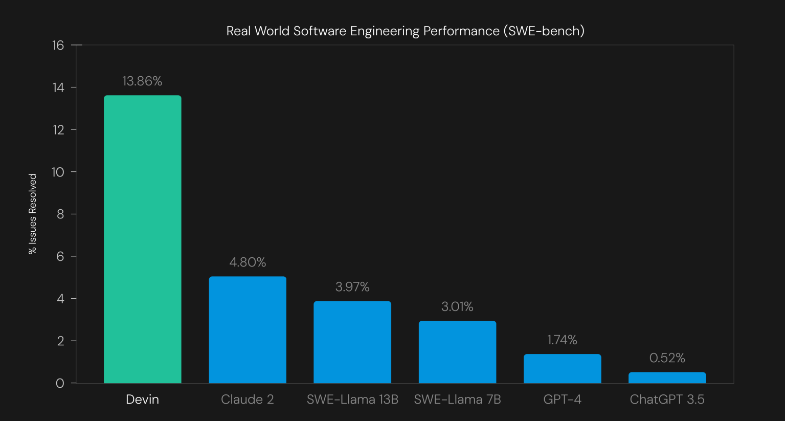

A empresa Cognition emerge furtivamente para lançar o engenheiro de software de IA Devin
Hoje, a Cognition , uma startup de IA recentemente formada, apoiada pelo Founders Fund de Peter Thiel e por líderes da indústria de tecnologia, incluindo o ex-executivo do Twitter Elad Gil e o cofundador da Doordash, Tony Xu, anunciou um engenheiro de software de IA totalmente autônomo chamado “Devin”.
Embora existam vários assistentes de codificação por aí, incluindo o famoso Github Copilot , diz-se que Devin se destaca da multidão por sua capacidade de lidar com projetos de desenvolvimento completos, de ponta a ponta, desde escrever o código e corrigir os bugs associados a ele até a execução final. Esta é a primeira oferta deste tipo e até capaz de lidar com projetos no Upwork, demonstrou a startup.
O anúncio de Devin marca uma mudança significativa no espaço de desenvolvimento assistido por IA, dando aos engenheiros um trabalhador de IA completo para seus projetos, em vez de um copiloto que poderia apenas escrever código básico ou sugerir trechos.
No entanto, a partir de agora, Devin permanece não público, com a empresa abrindo acesso apenas a alguns clientes selecionados, incluindo o jornalista da Bloomberg Ashlee Vance, que escreveu sobre sua experiência ao usá-lo aqui .
O que exatamente Devin pode fazer?
Em uma postagem de blog hoje no site da Cognition , Scott Wu, fundador e CEO da Cognition e um programador esportivo premiado, explicou que Devin pode acessar ferramentas comuns de desenvolvedor, incluindo seu próprio shell, editor de código e navegador, dentro de um ambiente de computação em sandbox para planejar e executar tarefas complexas de engenharia que exigem milhares de decisões.
O usuário humano simplesmente digita um prompt em linguagem natural na interface estilo chatbot de Devin, e o engenheiro de software de IA parte daí, desenvolvendo um plano detalhado e passo a passo para resolver o problema. Em seguida, ele inicia o projeto usando suas ferramentas de desenvolvedor, exatamente como um ser humano as usaria, escrevendo seu próprio código, corrigindo problemas, testando e relatando seu progresso em tempo real, permitindo ao usuário ficar de olho em tudo enquanto funciona. .
Se algo não parecer certo para o observador humano, o usuário também pode entrar na interface de bate-papo e dar um comando à IA para consertar. Isso, diz a Cognition, permite que as equipes de engenharia deleguem alguns de seus projetos à IA e se concentrem em tarefas mais criativas que exigem inteligência humana.
Desta forma, Devin oferece um novo paradigma que pode ser um vislumbre de como todo o desenvolvimento de software – e o trabalho informático em geral – poderá ser feito num futuro próximo: por trabalhadores de IA supervisionados por supervisores/utilizadores humanos.
Capaz de lidar com uma ampla gama de tarefas de desenvolvimento
De acordo com as demonstrações compartilhadas por Wu, Devin é capaz de realizar uma série de tarefas em sua forma atual. Isso inclui projetos de engenharia comuns, como implantação e melhoria de aplicativos/sites de ponta a ponta e localização e correção de bugs em bases de código, até coisas mais complexas, como configuração de ajuste fino para um modelo de linguagem grande usando o link para um repositório de pesquisa no GitHub ou aprendizagem como usar tecnologias desconhecidas.
Em um caso, aprendeu em uma postagem de blog como executar o código para produzir imagens com mensagens ocultas. Enquanto isso, em outro, administrou um projeto Upwork para executar um modelo de visão computacional, escrevendo e depurando o código para ele.
No teste SWE-bench, que desafia assistentes de IA com problemas do GitHub de projetos de código aberto do mundo real, o engenheiro de software de IA foi capaz de resolver corretamente 13,86% dos casos de ponta a ponta – sem qualquer assistência humana. Em comparação, Claude 2 poderia resolver apenas 4,80%, enquanto SWE-Llama-13b e GPT-4 poderiam resolver 3,97% e 1,74% dos problemas, respectivamente. Todos esses modelos necessitaram até de assistência, onde foram informados qual arquivo deveria ser consertado.
A tecnologia principal permanece não descrita
IA no desenvolvimento de software não é uma façanha nova. Já existem ferramentas neste espaço há algum tempo, desde o popular GitHub Copilot e StarCoder até Replit , que tem alguns pequenos modelos de codificação de IA no Hugging Face, e Codeium , que recentemente obteve US$ 65 milhões de financiamento da série B em uma avaliação de US$ 500 milhões.
No entanto, a maioria dessas ofertas concentra-se amplamente no uso de IA para auxiliar na codificação. Eles podem gerar código básico a partir de prompts de texto, resumi-lo com contexto IDE relevante ou recuperar trechos, acelerando o fluxo de trabalho da equipe. Com Devin, a Cognition AI parece estar dando um passo (ou vários passos) adiante, proporcionando um trabalhador de IA completo para lidar com projetos inteiros.
Embora a ferramenta ainda precise ser testada, sua capacidade de lidar com diversas etapas – mantendo-se no caminho certo – para concluir um projeto de engenharia de software é o maior ponto de venda exclusivo. A Cognition não revelou exatamente como conseguiu este feito e se está a utilizar o seu próprio modelo proprietário ou o de terceiros, mas observa que o trabalho é o resultado dos seus “avanços no raciocínio e planeamento de longo prazo”.
Atualmente, a empresa está aumentando a capacidade e oferecendo acesso antecipado ao Devin apenas para usuários selecionados. Diz que as partes interessadas que desejam aumentar seu trabalho de engenharia podem entrar em contato por e-mail para obter acesso. Espera-se que o acesso mais amplo seja aberto numa fase posterior.
A Cognition também observa em seu site que a codificação é “apenas o começo”, o que parece indicar que ela pode aproveitar seus avanços de raciocínio para lançar agentes/trabalhadores de IA semelhantes também para outras disciplinas. A empresa recebeu US$ 21 milhões em financiamento até agora.
Clique aqui para acessar a fonte